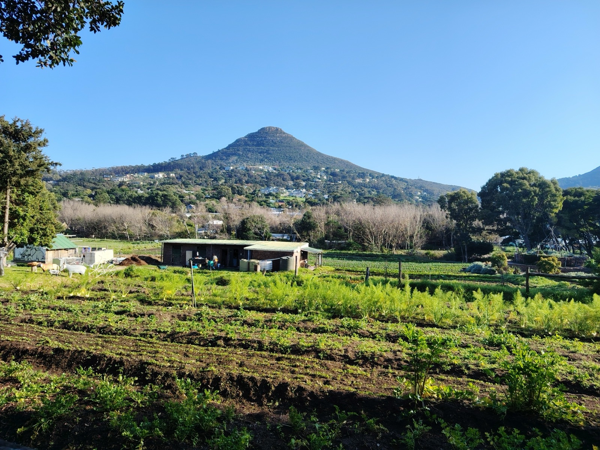
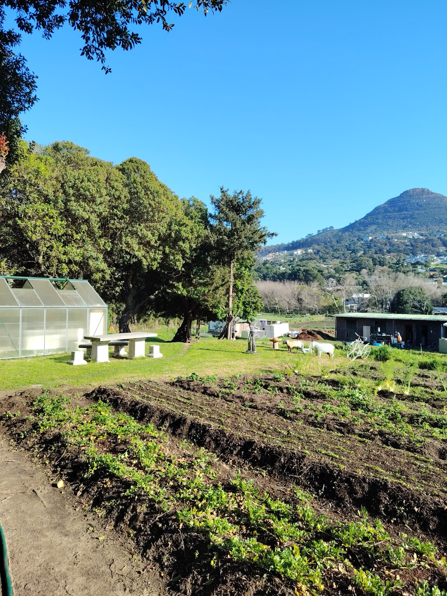
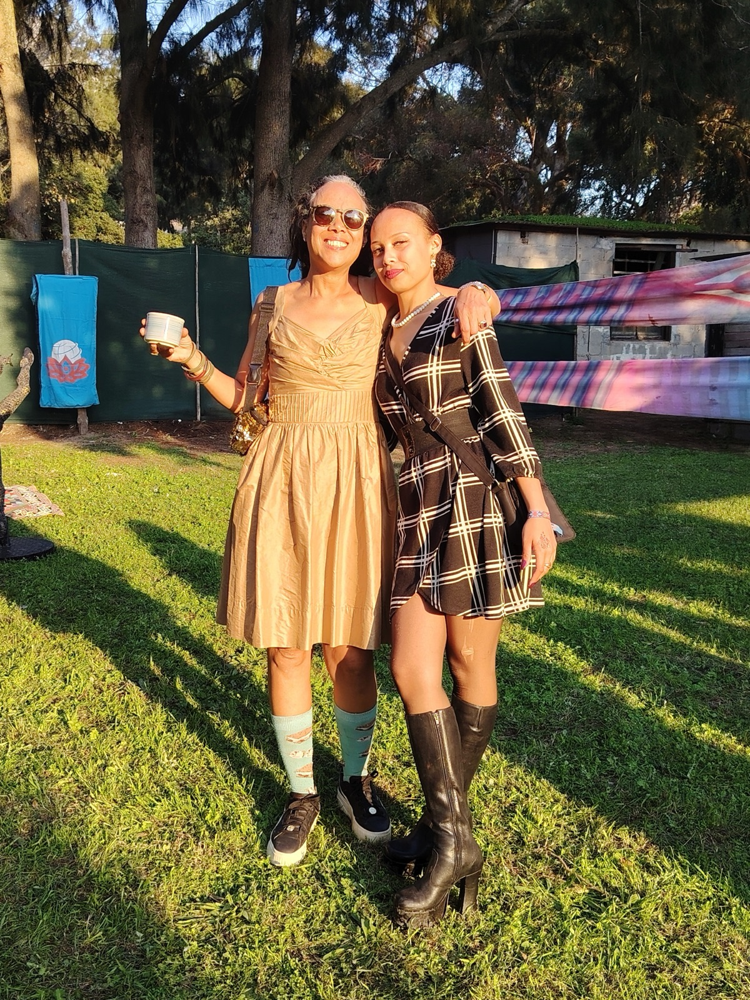
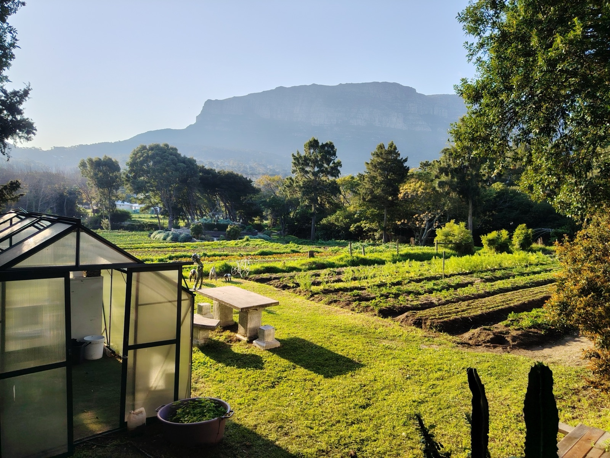
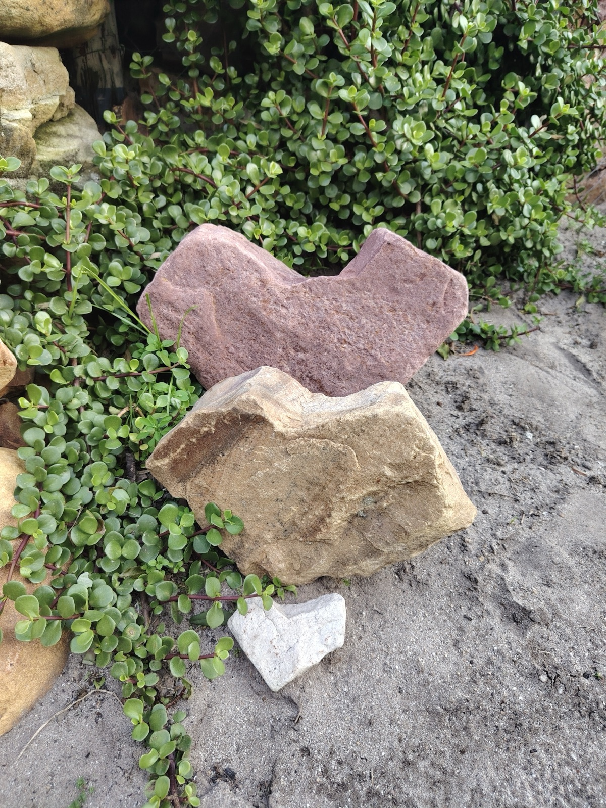

Heart at Love in a Bowl
The journey to Earthdance 2026 didn't start on a dancefloor. It started in a vegetable garden in Hout Bay, on a winter Saturday, with food and conversation and mountains on every side.
A farm that feeds its town
Love in a Bowl is a community farming project growing organic vegetables in the Hout Bay valley. Their line is simple: locally grown, all natural, all love.
The garden runs on a straightforward, quietly radical model. Weekly vegetable bags — grown right there, picked that week — are sold to households around the valley, and what those bags earn funds the distribution of food to the most vulnerable people of the town. Buying their vegetables isn't charity; it's just a good deal that happens to feed more people than you.
Around the growing sits the rest of the circle: a weekly food-waste collection that turns the neighbourhood's scraps into the garden's compost instead of landfill, and an education mission that works to raise the next generation as mindful stewards of the environment.
Food, care, learning, land. It is a whole philosophy, run out of a garden.

"Love in a Bowl is more than a venue. It is a living Hout Bay community space."
What Heart was
Heart was the first gathering of the 2026 journey — a family-friendly midwinter day at the farm in June, and deliberately nothing like a festival.
There was music, but gently. There was food. Mostly there were people: the Earthdance community and the Love in a Bowl community in one place, meeting each other properly — around tables, between the crop rows, in long unhurried conversations.
That was the point. This year's theme is Heart and Beat of Humanity, and Heart was the chapter that gave the year its emotional grounding. Before the dancefloors, before the night energy, before the September convergence — a reminder that Earthdance grows through relationship, not only promotion.
It was a real meeting point between communities. And it set the tone for everything that follows.

Scenes from Heart



Heart, 20 June 2026, Love in a Bowl, Hout Bay.
The same values, two scales
Earthdance and Love in a Bowl are doing a version of the same thing: building community around care — for people, and for the piece of land that holds them.
Love in a Bowl does it fifty-two weeks a year in one valley. Earthdance does it once a year on one farm, joined to a planet-wide moment. Heart is where those two rhythms met, and the partnership didn't end when the day did — Love in a Bowl is a community partner of Earthdance 2026, and their story travels with the journey to September.
When you get to Kromrivier and find the market village, the shared meals, the compost separation and the care taken with the land — that tone was set in June, in a garden in Hout Bay.

Support Love in a Bowl
The best way to thank a community farm is to be part of its week. If you're in or near Hout Bay:
Buy the veg
Weekly organic vegetable bags, from a duo bag to a family bag — grown in the garden, and every sale helps fund food distribution in the valley.
Shop the bags →Compost your scraps
Their Circle of Life collection picks up household food waste weekly and turns it into the compost that grows next season's food.
Join the collection →Donate or follow
Support the food distribution directly, or follow the garden through the seasons on their channels.
Donate →Find them at loveinabowl.co.za · @loveinabowlcommunity · facebook.com/loveinabowl
Heart opened the way. Humanity closes it.
Beat turned up the rhythm in July. The last warm-up is Humanity: Friday 21 August at Biblio, Cape Town CBD — and then the farm.